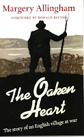
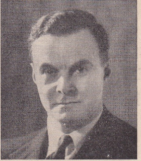

{kind=link}
Edward Young, pre-war design director at
Penguin Books, was the first RNVR (Royal Naval Volunteer Reserve) officer to enter the submarine
service. When he completed the training course and travelled to Harwich to take up his first post in October 1940 he was with two equally junior sub-lieutenants: Lionel Dearden from the RN and Jock Tait from the RNR (Royal Naval Reserve). Dearden was sent out immediately on HMS H49, while Tait and Young
joined H28.
Both were small, elderly submarines with 26 people on board and were sharing the patrol
duties off the coast of occupied Holland. In his postwar memoir, One of our Submarines (1952) Young remembered 23 year old Dearden returning that first time, tired and weather-beaten. The other two were
eager to hear him talk about his experience: ‘but though we had been in the same training
class there was a gulf fixed between us: he had completed a war patrol and we
had not.’
On H28 Tait and Young survived a depth
charge attack and being machine-gunned from the air but H49, which had set out to relieve
them, was missing. Later everyone on the Harwich base was called together to
hear the bad news: H49 was overdue
and must be presumed lost. ‘Jock and I went off for a long walk. I felt very
cold and dead inside and we hardly spoke. We thought of Dearden who had been in
our training class. He seemed now impossibly remote; I fancied him smiling
again that same tired smile with which he had greeted us on his last return to
harbour. Once more he had crossed a gulf ahead of us Later Jock was to cross it too and in less
than a year I was to come very close to doing so myself.’
H28 had been ‘lightly’ depth-charged: ‘a sharp crack, as of a giant hammer, struck the pressure hull,
followed by a frightful reverberating roar which seemed to echo through all the
subterranean ocean caves of the world. […] there was a second mighty crack, and
again that thundering rumbling aftermath.’ Their captain, Lt. Mervyn Wingfield, reassured them that this was ‘not close’. They were ‘pinged’ by hostile asdic. ‘a faint slow regular
knocking, as though someone was tapping gently on the outside of the hull. I
thought of Pew’s stick tapping along the road in Treasure Island. It was like being shut up in a dark room, with a
blind maniac reaching out sinister fingers to find you. Perhaps the enemy had
already detected our echo from his transmission and was even now reaching out
for the kill.’
Their friend Dearden and the crew of H49 had endured two hours of continuous
depth charging before the submarine’s pressure hull ruptured and all 26 crew
died.
The elderly
H28 was withdrawn from her patrol duties and redeployed as a training boat
off the Scottish west coast. Young stayed with her until he was invited to rejoin Mervyn Wingfield on the brand new submarine, HMS Umpire, at Chatham. Immediately he felt among friends: the 1st Lieutenant, Peter
Bannister, was energetic and good humoured and the
navigator, Tony Godden, was another friend from the training course; ‘a most
amusing and endearing shipmate’. They bonded easily and, as HMS Umpire set out on her maiden voyage,
joining a northbound convoy up the English East Coast, Young and his companions felt optimistic. When their convoy was attacked by a
low-flying bomber off Aldeburgh the submarine’s first emergency dive was a
confidence-boosting success.
{kind=link}
Towards nightfall, however, one of the engines
failed and Umpire fell behind. A motor launch had been detailed to escort her but they lost sight of
each other in the darkness. They were travelling a narrow channel: the East Anglian coast to one side, a minefield on the other. It was a regular E-boat hunting ground so no-one was showing any lights.
At about midnight HMS Umpire was on the surface, proceeding slowly up the starboard (right
hand) side of the channel. Navigator Tony Godden got a message that a southbound convoy was approaching, also
on the seaward side. This was not normal. They should have been inland, following the accepted rule-of-the-road which directed that vessels
should pass each other port to port (left hand side to left hand side). He called Lt Wingfield who hurried to the bridge.
Already the large black shapes of the merchant ships were beginning to pass in
a steady line on their seaward side. Wingfield gave an order to turn slightly to port, away from them. By
the normal mariner’s collision regulations this was wrong. He must have felt he had no choice.
Suddenly, out of the darkness, came the solid
shape of a 266 ton ASW (anti-submarine warfare) trawler, the Peter Hendricks, heading straight for
them. Through the voice pipe Young heard Wingfield shout ‘hard-a-port!’ He and Bannister jumped up from the table where they had been sitting to decode
a message. The Peter Hendricks tried to take avoiding action, turning (instinctively and correctly) to
starboard. The trawler’s heavy bows rammed the submarine hard. Young and Bannister heard ‘the sickening metallic crash’ as the
two vessels ground together. Perhaps
they also heard their Captain shouting ‘You bloody bastard, you’ve sunk a
British submarine!’ Then the sub and the trawler disengaged. It took only thirty seconds for Umpire to begin
her plunge to the bottom. Wingfield, Dutton and the two lookouts were swept
overboard (only Wingfield survived).
Young, Bannister and the rest of
the crew were trapped inside. Water was pouring in from
above although both the main hatch and the engine room hatch were closed. Why was this when the area of the hull that had been ripped open was forward? A submarine’s interior is divided into
separate sections divided by watertight doors. The further door to
the damaged compartment was already shut.
Whoever was trapped behind it
was already dead. Men were running through from one compartment to the next as
the water rose behind them. ‘Shut that bloody door!’ shouted the first
lieutenant but Young was able to hold off until they were all through before he
obeyed.
But still the water was pouring in from
somewhere. Young remembers that his brain seemed ‘paralyzed’. Well after the event he realised there had been a
ventilation shaft left open. If he had been thinking
clearly then, he could have closed it and given them all vital time to escape safely. For their
single stroke of luck had been that Umpire
had come to rest on the Sheringham Shoal – a relatively shallow area of the sea
bed. Their highest point was about 60’ (18m) below the surface: the pressure
outside would not be crushing.
Meanwhile the interior of the submarine
continued to fill: if the water reached the batteries, the reaction would
create highly poisonous chlorine gas. Young was searching for torches as the boat's electrical circuits shorted out and it became hard to see. He found a crew member trying to open the door
into the flooded bow section. ‘ “My pal’s in there,” he was moaning, “my pal’s
in there” “It’s no good,” I told him; “she’s filled right up forward and
there’s no-one left alive on that side of the door.” He turned away, sobbing a
little.’
There were people behind the closed door to the
engine room at the aft end of the ship but when Young returned after another attempt to search for torches he found the centre of the
submarine deserted: ‘Perhaps they had all escaped through the
engine room escape hatch without realising that I had been left behind. Even f
they had not yet left the submarine, they might already have started flooding
the compartment in preparation for an escape and if that flooding had gone
beyond a certain point it would be impossible to get that door open again. I
listened but could hear nothing beyond the monotonous pitiless sound of pouring
water. In this terrible moment I must have come very near to panic.’
Edward Young did eventually escape; stripping to his
underclothes and bursting out through the conning tower with three others to
swim blindly, desperately up to the surface; ears roaring, lungs
bursting, fighting for his life ‘with all one’s primitive instincts for
survival’. Once again he became separated
from his companions and survived long, lonely swim in the dark before he
was found, taken aboard a motor launch and eventually landed in Yarmouth. Later he
was humbled to learn of the calm – and indeed heroic – way in which the Chief
ERA (engine room artificer) had
organised his group into their escape suits, given them instructions and then had waited underwater on
the hull of the submarine until he was certain everyone was out.
‘That evening I strolled alone after dinner in
a small grassy courtyard. A gentle drizzle of rain was falling, and it was what
one would call a miserable evening, but to me the sound of the soft rain
falling like a benediction on the living grass seemed inexpressibly sad and
sweet, and life itself so desirable that I could not imagine ever again being
dissatisfied with it. For the first time I knew the delirious joy of not being
dead.’
{kind=link}

Land-based Margery Allingham recording her unanticipated reactions to a near miss from a bomb in the autumn of 1940 had used that same word. ‘As soon as it was over I was delirious with pleasure to find I had not been hurt. It was the most purely animal reaction I ever remember having and when I got downstairs, which was almost immediately, I found that everybody else appeared to be in the same mood. No one could have called us an expansive people, but had we gone about shouting “Not dead! Not dead!” we could hardly have expressed our satisfaction more obviously.’ (The Oaken Heart p223)
About half of Umpire’s crew of 32 had survived the disaster but Young’s friends Peter Bannister and Tony Godden were not among them. Despite
his joy, Young was disappointed with himself: ‘I felt that in
the emergency I had failed to act in the manner expected of a submarine
officer. Running over again and again the sequence of events following the
moment of collision, I was tortured by two nagging thoughts. First, why had I
not had the sense to realise that all the water coming into the control room
had been pouring in through the ship’s ventilation system? Secondly – and this
has haunted me ever since – I knew that I should have been I the engine-room
with the men.’ He wondered how he could find the courage to continue. ‘I
resolved to ask to be sent on an operational patrol as soon as possible.’
Let me commend Young's book to you. It's
DEDICATED TO THE MEMORY OF THOSE WHO DID NOT RETURN FROM PATROL
Need I say more?
 |
| Within 3 years of leaving his pre-war life as a book designer Edward Preston Young, who had seen so many of his friends die - or fail to return - took command of a submarine as a volunteer officer. He served with conscientious bravery from the Lofoten Islands to the Lombock Strait but never managed to forget experience on HMS Umpire. |
{kind=link}